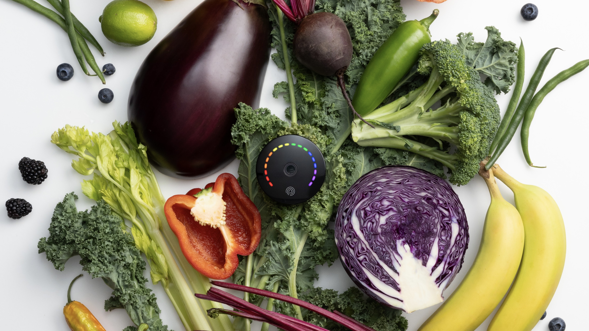

Prysm iO™
Nutrition data from a fingertip
biological aging insights

Why You'll Love It
- Track your carotenoids level without blood test.
- Carotenoid intake is correlated to healthy aging.
- Stanford Medicine research shows a higher Prysm score trended with a younger, slower-aging, less-inflammatory epigenetic profile.
Scientific Validation
Frequent Questions
What are carotenoids

- A family of 600+ nutrients that give plants their red, orange, yellow, and dark green colors and help protect them from environmental stress.
- The most researched types include lycopene, lutein, zeaxanthin, beta-carotene, and astaxanthin.
- Linked to benefits for immune function, eye, heart, and skin health, and may help reduce certain cancer risks.